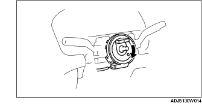
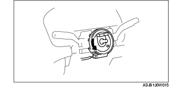
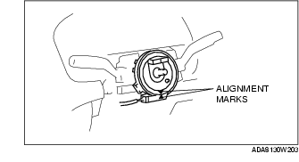

-
Note
-
• The adjustment procedure is also specified on the caution label of the clock spring.
1. Set the front wheels straight ahead.
-
Caution
-
• The clock spring will break if over-wound. Do not forcibly turn the clock spring.
2. Turn the clock spring clockwise until it stops.

3. Turn the clock spring counterclockwise 2 3/4 turns.

4. Align the mark on the clock spring with the mark on the outer housing.
